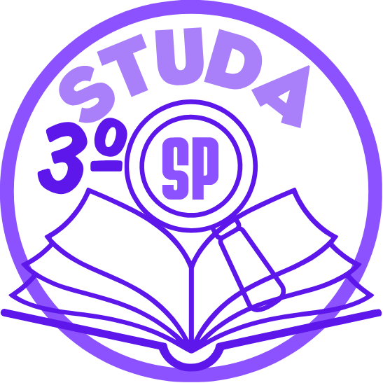

3studaSP é um modelo de site, a princípio criado com o intuito de reunir mídia com foco em aprendizagem.
Este não é, de fato, um site, mas um projeto de programação que também está sendo utilizado para agrupar
informação e auxiliar outros estudantes a aprender da forma mais eficiente, disponibilizando diferentes opções.
Alunos do 3º Ano do Ensino Médio do Estado de São Paulo.
Recursos de IA, como vídeos e áudios, são feitos a partir da ferramenta NotebookLM do Google. Todo o conteúdo apresentado pela IA provém do material digital de slides oferecidos pela SEDUC, também usado nas apostilas.
Aos poucos, novos conteúdos e matérias serão adicionadas, fique atento.